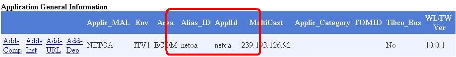

Get the details of the application from enterprise test portal. (See if it is Managed or Unmanaged application, if it is unmanaged and you are bouncing it before 4:00 PM MST, make sure that you confirm if a rolling or complete bounce is needed. If a complete bounce is required make sure that all testing teams are conveyed before starting as it counts for downtime of the application)
Open the Java Install Manager Tool. Select the application and the Test Environment from the drop down available at the top right corner of the IM.
Spawn the putty sessions for that application in that Test Env.
Now do wlsdeploy or fireant depending on the deployment script app uses.
Now, enter the alias id.(Note that app id and alias id might not be same for an app)
For Wlsdeploy - After that a dropdown menu appears. Either you can select 7 and 8 in turn to first stop and then start the cluster respectively OR you can directly select option 8 that says cluster restart.
For Fireant – Enter the option number 16 and then 17 OR only 17
Now check if all the servers are in RUNNING mode. This is better checked if we look for logs and console both.
Check the URLs.
If all seems fine close the putty sessions or else troubleshoot and debug it.
Since bounce will always be asked as a part of defect, please update the defect and close it choosing proper options in QC.
Examples:
Let us take Qcordering ITV3 for example.
So we need to spawn putty session for Qcordering in ITV3 test Env. And after giving wlsdeploy (since it uses wlsdeploy script) we should give qcordering3 that implies alias id for this app is qcordering3. (However app-id for same is qcorder.) For this app, we need to take permission from ETRM, if a complete bounce is asked before 4:00 PM MST as it is a Managed Application.
Now let us take IOT ITV2.
Again we will spawn putty session for IOT in ITV2 Test Env. Here you have to give fireant (as this app uses fireant script). And now give iot2 as alias-id. (However app-id is iotecom). You can do a complete bounce if you are not clear with instructions mentioned by requestor on the request as it is an Unmanaged application.
Point to Note:When we say an app uses wlsdeploy/fireant script we actually mean that weblogic version on which app is installed is 8 or higher. For apps using Weblogic version 8, fireant is used and for other higher weblogic versions wlsdeploy script is used.
You can find the Appid and Aliasid from the inventory refer below screen shot for the same
